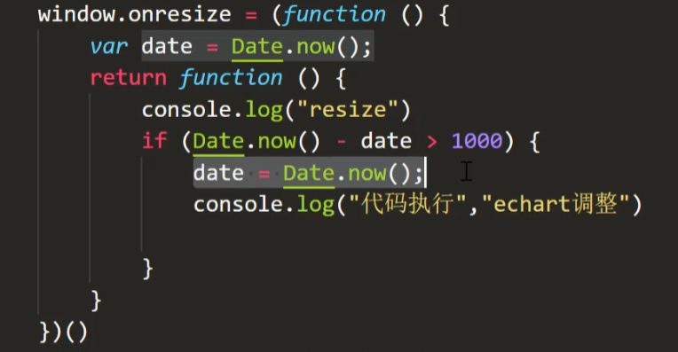

1 什么是闭包 MDN:闭包（closure）是一个函数以及其捆绑的周边环境状态的引用的组合。换而言之，闭包让开发者可以从内部函数访问外部函数的作用域。在 JavaScript 中，闭包会随着函数的创建而被同时创建。
换言之： 闭包就是一个函数，这个函数能够访问其他函数的作用域中的变量。
1 2 3 4 5 6 7 function outer (var a = 1 ;var inner = function (console .log (a)return inner
2 闭包的特性 相较于全局变量和局部变量，闭包有以下两个特性：
函数嵌套函数；
内部函数可以访问外部函数的变量；
持久性：被访问的参数和变量不会被JavaScript垃圾回收机制回收（不会被销毁）。一般的函数，调用完毕之后，系统自动注销函数，而对于闭包来说，在外部函数被调用之后，闭包结构依然保存在系统中，闭包中的数据依然存在，从而实现对数据的持久使用。闭包拥有全局变量的不被释放的特点。
3 闭包的优缺点 优点：
可以让一个变量长期在内存中不被释放（用的太多就变成了缺点，占内存）。
避免全局变量的污染，和全局变量不同，闭包中的变量无法被外部使用。
保护函数内的变量安全；加强封装性 ，可以达到对变量的保护作用，如果在闭包内声明变量，外界是无法访问的，除非闭包主动向外界提供访问接口
缺点：
常驻内存，会增大内存使用量，使用不当很容易造成内存泄露。
内存浪费问题，这个内存浪费不仅仅因为它常驻内存，更重要的是，对闭包的使用不当会造成无效内存的产生。
4 闭包的作用 闭包主要在三个方面应用：防抖、节流、函数柯里化
1.防抖：
原理：利用闭包的特性（用到的变量不会被js垃圾回收机制回收）来保存接收定时器的变量
1 2 3 4 5 6 7 8 9 10 11 12 13 14 15 16 17 function Antishake (fn,wait ){ let timer = null return function (clearTimeout (timer)setTimeout (() => {fn () let an = Antishake (function (console .log ('555' );2000 )document .querySelector ("button" ).onclick = () => {an ();
2.节流：
原理：利用闭包的特性（用到的变量不会被js垃圾回收机制回收）来保存时间
1 2 3 4 5 6 7 8 9 10 11 12 13 14 15 16 function throttle (fn,wait ){let timer = null return function (if (timer) return setTimeout (() => { fn ()null let throttle1 = throttle (function (console .log ('我上车了' );2000 )document .querySelector ('div' ).onclick = ()=> {throttle1 ()
防抖避免重复执行 只执行一次
节流 减少执行次数 执行多次
案例：窗口大小改变执行操作：

3.函数柯里化：
1.
后续补充。。。
5 闭包的经典案例 1.点击标签，打印出索引值，用闭包模仿块级作用域
1 2 3 4 5 <ul > <li > 11111</li > <li > 11111</li > <li > 11111</li > </ul >
1 2 3 4 5 6 7 8 9 10 11 var lis = document .querySelectorAll ("li" )for (var i = 0 ;i < lis.length ;i++){onclick = function (console .log (i)
1 2 3 4 5 6 7 8 9 10 var lis = document .querySelectorAll ("li" )for (var i = 0 ;i < lis.length ;i++){function (a ){onclick = function (console .log (a)
注：ES6中用let定义i同样能实现该效果。
2.用闭包解决递归调用问题：
1 2 3 4 5 6 7 8 9 10 11 12 13 14 15 16 17 18 19 function factorial (num ) {if (num<= 1 ) {return 1 ;else {return num * factorial (num-1 )var anotherFactorial = factorialnull anotherFactorial (4 ) function newFactorial = （function f (num ){if (num<1 ) {return 1 }else {return num* f (num-1 )
6 闭包中的坑 1.this指向问题
1 2 3 4 5 6 7 8 9 10 11 12 13 var object = {name : '' object"， getName： function() { return function() { console.info(this.name) } } } object.getName()() // underfined // 因为里面的闭包函数是在window作用域下执行的，也就是说，this指向windows //实际等同于 var fn = object.getName() //此时object调用getname方法，this指向object fn(); //此时window调用fn（）方法，所以this指向window
2.内存泄漏问题：
内存泄漏一般是指变量的内存没有及时的回收，导致内存资源浪费。 一般有三种情况出现内存泄露比较多。（1）常见的声明了一个全局变量，但是又没有用上，那么就有点浪费内存了，（2）定时器没清除 （3）循环引用：A 对象里面有一个属性指向 B 对象，B 对象有一个属性指向 A 对象。互相引用
1 2 3 4 5 6 7 8 9 10 11 12 13 14 15 16 function showId (var el = document .getElementById ("app" )onclick = function (aler (el.id ) function showId (var el = document .getElementById ("app" )var id = el.id onclick = function (aler (id) null